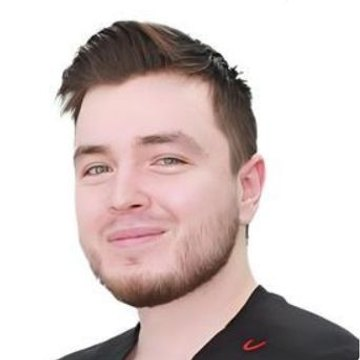
Ильясов Виталий АлександровичСтоматолог-хирургСтаж 4 года
Лечение, протезирование и детская стоматология
11 врачей Новосибирска для всей семьи
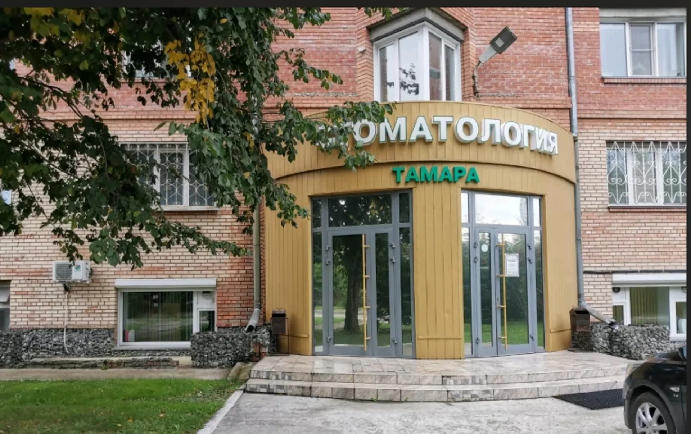
Прайс по позициям уточняйте при записи, точную сумму называют на осмотре.
Есть противопоказания, проконсультируйтесь с врачом.
Через форму на сайте, в Telegram или по телефону. Выбираете удобные день и время.
Врач смотрит, объясняет, что происходит и какие есть варианты.
С чего начать и в каком порядке: врач рассказывает, а решение за вами.
Взрослых и детей принимают разные врачи, детским стоматологам доверяют самых маленьких.
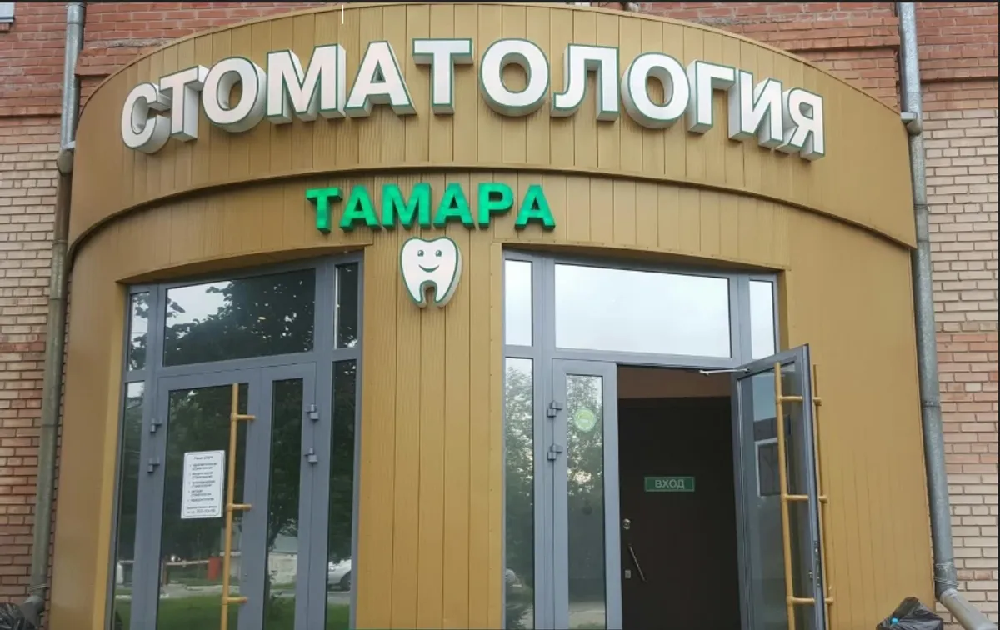
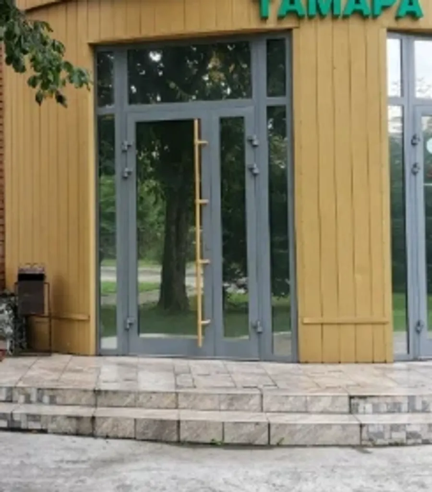
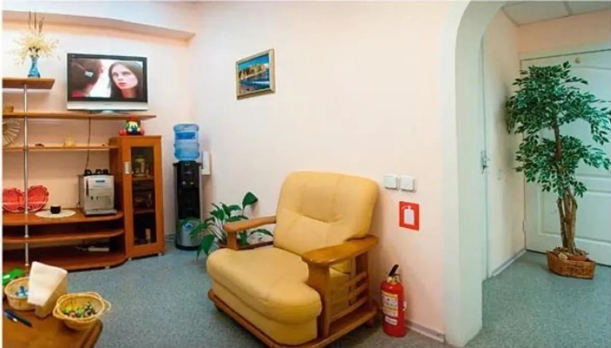
Одиннадцать врачей: терапевты, хирурги, ортопеды, ортодонт и детские стоматологи.

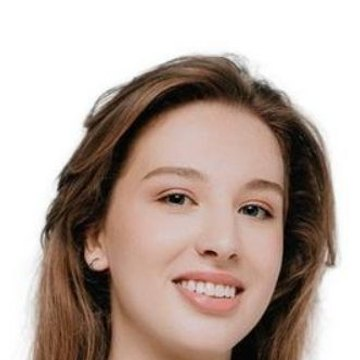
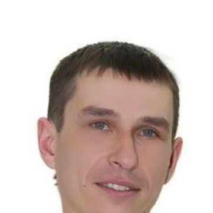
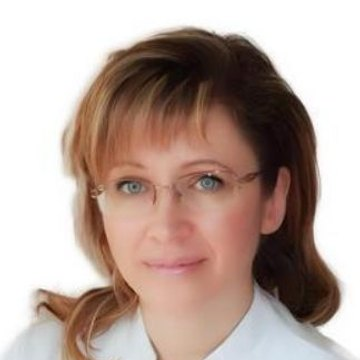
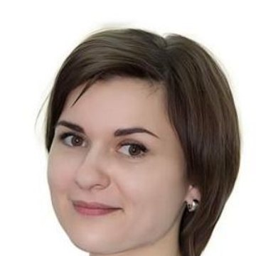
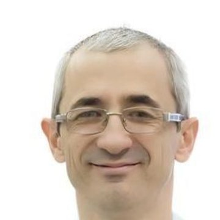
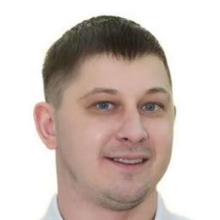
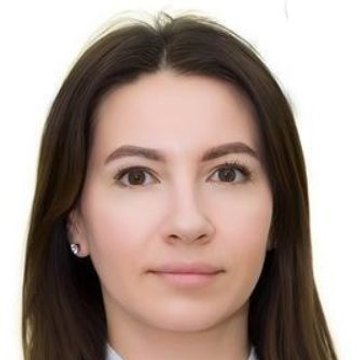
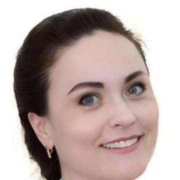
Пациенты пишут про внимательных врачей и вежливых администраторов.
Родители пишут, что дети не боятся ходить к детским стоматологам клиники.
В отзывах пациенты называют цены разумными, а подход честным.
На территорию клиники можно заехать на машине, вход ведёт в цокольный этаж.
«Хорошая стоматология. Честный подход. Разумные цены.»
Андрей Л · 7 ноября 2025
«Очень понравился приём и лечение у стоматолога Колпаковой Натальи Ивановны. Очень внимательное отношение к пациенту и высокий профессионализм.»
Наталья Гнедкова · 2 июня 2026
«чистку сделали чудесно,хорошие,добрые и понимающие врачи»
Тася · 3 августа 2026
Отзывы с карточки на 2ГИС, без правок.
Да, в клинике работают два детских стоматолога. Возраст и порядок приёма уточняйте при записи.
Лечение кариеса и каналов, профессиональная гигиена, удаление, съёмное и несъёмное протезирование, брекеты.
Цену называют на осмотре. Прайс по позициям уточняйте при записи.
Улица Аникина, 25а, цокольный этаж. Автобусы № 43 и 9, остановка «Кинотеатр Обь».